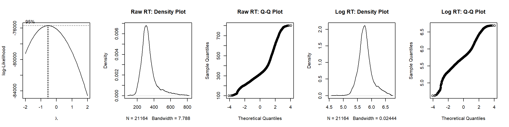

# Set general settings for markdown file
knitr::opts_chunk$set(
message = FALSE,
warning = FALSE,
comment = "",
results = "hold")
# Clear environment
rm(list = ls())
# Load packages
library(dplyr) # for data wrangling
library(knitr) # for integrating computing and reporting in markdown
library(pastecs) # for descriptive statistics
library(kableExtra) # for customizing appearance of tables
library(MASS) # for boxcox function and contrast definition
library(lme4) # for (G)LMMs
library(lmerTest) # for LMM p values (Satterthwaite's method for approximating dfs for t and F tests)
library(sjPlot) # for tab_model function to display (G)LMM results
# Load functions
source("./functions/summarySEwithinO.R") # Function provided by R-cookbook: http://www.cookbook-r.com/Graphs/Plotting_means_and_error_bars_(ggplot2)/
source("./functions/my_table_template.R") # Function to create table template
# Turn off scientific notation
options(scipen = 999)
# Prepare labels for (G)LMM tables
labels <- c(
"(Intercept)" = "Intercept",
"gng_response_type2-1" = "FH – SH",
"gng_response_type3-2" = "FA – FH",
"group2-1" = "Group (OCD – HC)",
"gng_response_type2-1:group2-1" = "FH – SH x Group",
"gng_response_type3-2:group2-1" = "FA – FH x Group")# Load data
load(file = "./data/Single_Trial_Data.rda")
# Create numeric accuracy variable (0 = FA; 1 = SH, FH, IR)
single_trial_data <- single_trial_data %>%
dplyr::mutate(gng_accuracy_numeric = ifelse(gng_response_type == "FH" | gng_response_type == "SH" |
gng_response_type == "IR", 1, ifelse(gng_response_type == "FA", 0, NA)))
# For RT analysis, exclude inhibited gng responses, missing gng responses, gng responses with
# wrong key, gng RT outliers, and trials with ERP artifacts
single_trial_data_gng_rt <- single_trial_data %>%
dplyr::filter(
gng_response_type != "IR" &
gng_response_type != "miss" &
gng_response_type != "wrong_key" &
(is.na(gng_rt_invalid) | gng_rt_invalid == FALSE) &
stimulation == "sham" &
MFN_artifact == FALSE)
# For accuracy analysis, exclude missing gng responses, gng responses with wrong key, gng RT outliers,
# and trials with ERP artifacts
single_trial_data_gng_acc <- single_trial_data %>%
dplyr::filter(
gng_response_type != "miss" &
gng_response_type != "wrong_key" &
(is.na(gng_rt_invalid) | gng_rt_invalid == FALSE) &
stimulation == "sham" &
MFN_artifact == FALSE)
# Make categorical variables factors
single_trial_data_gng_rt$gng_response_type <- factor(single_trial_data_gng_rt$gng_response_type,
levels = c("SH", "FH", "FA"))
single_trial_data_gng_rt$participant_id <- factor(single_trial_data_gng_rt$participant_id)
single_trial_data_gng_rt$group <- factor(single_trial_data_gng_rt$group)
single_trial_data_gng_acc$participant_id <- factor(single_trial_data_gng_acc$participant_id)
single_trial_data_gng_acc$group <- factor(single_trial_data_gng_acc$group)In the analysis of RT and accuracy in the go/no-go task, trials were discarded if RT in the go/no-go task was below 100 ms or above 800 ms, no response was made, or the response was made with a key not assigned to the go/no-go task. We further discarded trials containing artifacts in the EEG, i.e., a voltage difference exceeding 200 μV within an epoch or 50 μV between sample points.
This table corresponds to Table S2 in the supplemental material.
# Calculate descriptive statistics for RT
descriptive_statistics_rt <- summarySEwithinO(
data = single_trial_data_gng_rt,
measurevar = "gng_rt",
withinvars = "gng_response_type",
betweenvars = "group",
idvar = "participant_id",
conf.interval = .95) %>%
# Rename variable and select variables for subsequent merging
dplyr::rename(mean = gng_rt) %>%
dplyr::select("group", "gng_response_type", "mean", "ci")
# Prepare calculation of descriptive statistics for proportion of response types (based on all trials)
descriptive_statistics_proportion <- single_trial_data %>%
dplyr::filter(stimulation == "sham") %>%
dplyr::group_by(participant_id, group) %>%
dplyr::summarize(
SH = sum(gng_response_type == "SH") / length(participant_id) * 100,
FH = sum(gng_response_type == "FH") / length(participant_id) * 100,
FA = sum(gng_response_type == "FA") / length(participant_id) * 100,
IR = sum(gng_response_type == "IR") / length(participant_id) * 100,
misses = sum(gng_response_type == "miss") / length(participant_id) * 100,
wrong_key = sum(gng_response_type == "wrong_key") / length(participant_id) * 100) %>%
dplyr::ungroup()
# Calculate descriptive statistics for proportion (exclude first column containing participant ID)
descriptive_statistics_proportion <- descriptive_statistics_proportion[, -c(1)] %>%
dplyr::group_by(group) %>%
do(data.frame(t(stat.desc(.)))) %>%
na.omit() %>%
dplyr::ungroup() %>%
# Create response type column, rename variable, and select variables for subsequent merging
dplyr::mutate(gng_response_type = rep(c("SH ","FH ","FA ","IR", "Missing response", "Wrong key response"),2)) %>%
dplyr::rename(ci = CI.mean) %>%
dplyr::select("group", "gng_response_type", "mean", "ci")
# Combine measures
descriptive_statistics <- as.data.frame(rbind(descriptive_statistics_rt, descriptive_statistics_proportion))
# Create column with format "M [CI]" for RT (round to 0 decimals)
descriptive_statistics$M_CI <- paste0(round(descriptive_statistics$mean, 0), " [",
round(descriptive_statistics$mean - descriptive_statistics$ci, 0), ", ",
round(descriptive_statistics$mean + descriptive_statistics$ci, 0), "]")
# Create column with format "M [CI]" for accuracy (round to 2 decimals)
descriptive_statistics[c(7:18), ]$M_CI <- paste0(
format(round(descriptive_statistics[c(7:18), ]$mean, 2), nsmall = 2), " [",
format(round(descriptive_statistics[c(7:18), ]$mean -
descriptive_statistics[c(7:18), ]$ci, 2), nsmall = 2), ", ",
format(round(descriptive_statistics[c(7:18), ]$mean +
descriptive_statistics[c(7:18), ]$ci, 2), nsmall = 2), "]")
# Split and re-merge table to display both groups next to each other
descriptive_statistics <- split(descriptive_statistics, descriptive_statistics$group)
descriptive_statistics_display <- cbind(descriptive_statistics$OCD[, c("gng_response_type", "M_CI")],
descriptive_statistics$HC[, "M_CI"])
# Display table (and rearrange rows)
my_table_template(descriptive_statistics_display[c(3:1, 4:9), ],
caption = "Descriptive Statistics for Behavioral Performance in the Go/No-Go Task",
col_names = c("Measure", rep("M [95% CI]", 2)),
header_above_config = c("", "Patients with OCD", "Healthy control participants")) %>%
add_footnote("\n Note. CIs are adjusted for within-participant designs using the method described
by Morey (2008).", notation = "none") %>%
pack_rows("Response time (ms)", 1, 3) %>%
pack_rows("Proportion of responses (%)", 4, 9)| Measure | M [95% CI] | M [95% CI] |
|---|---|---|
| Response time (ms) | ||
| SH | 363 [360, 365] | 362 [360, 365] |
| FH | 297 [295, 298] | 283 [281, 285] |
| FA | 285 [279, 290] | 296 [290, 302] |
| Proportion of responses (%) | ||
| SH | 44.77 [41.70, 47.85] | 46.37 [42.86, 49.88] |
| FH | 21.23 [18.23, 24.24] | 19.69 [16.47, 22.91] |
| FA | 9.14 [ 6.97, 11.30] | 8.76 [ 7.33, 10.19] |
| IR | 23.34 [21.19, 25.49] | 23.74 [22.33, 25.15] |
| Missing response | 1.03 [ 0.52, 1.54] | 1.17 [ 0.45, 1.89] |
| Wrong key response | 0.49 [ 0.26, 0.71] | 0.27 [ 0.16, 0.38] |
|
Note. CIs are adjusted for within-participant designs using the method described by Morey (2008). |
||
We performed a linear mixed model (LMM) on single-trial data. Analysis of RT in the go/no-go task included group and response type (slow hit, fast hit, false alarm) as fixed effects.
We used sliding difference contrasts for categorical fixed effects and started with the maximal random-effects structure for each model. In case of non-convergence, random effects were specified as uncorrelated. Using principal component analysis, we identified random effects explaining zero variance and removed these, as recommended by Bates, Kliegl, et al. (2015).
RT was log-transformed to normalize residuals. This was determined using the Box–Cox procedure (Box & Cox, 1964).
# Arrange plots
par(mfrow = c(1, 5))
# Determine transformation by estimating optimal lambda using Box–Cox procedure
bc_rt <- boxcox(gng_rt ~ 1, data = single_trial_data_gng_rt)
optlambda_rt <- bc_rt$x[which.max(bc_rt$y)]
# Density plot for raw RT
plot(density(single_trial_data_gng_rt$gng_rt), main = "Raw RT: Density Plot")
# Q-q plot for raw RT
qqnorm(single_trial_data_gng_rt$gng_rt, main = "Raw RT: Q-Q Plot", pch = 1)
# Density plot for log RT
plot(density(single_trial_data_gng_rt$gng_rt_log), main = "Log RT: Density Plot")
# Q-q plot for log RT
qqnorm(single_trial_data_gng_rt$gng_rt_log, main = "Log RT: Q-Q Plot", pch = 1)
# Reset plot layout
par(mfrow = c(1, 1))The optimal lambda is -0.55, suggesting that log transformation is appropriate.
This table corresponds to Table 2 in the manuscript.
# Define contrasts (sliding difference contrasts = effect coding for factors with 2 levels)
contrasts(single_trial_data_gng_rt$gng_response_type) <- contr.sdif(3)
contrasts(single_trial_data_gng_rt$group) <- contr.sdif(2)
# Run model with maximal random-effects structure
LMM_gng_rt <- lmer(gng_rt_log ~ gng_response_type * group +
(1 + gng_response_type | participant_id),
data = single_trial_data_gng_rt,
REML = TRUE,
control = lmerControl(optimizer = "bobyqa"))
# Check model output and PCA of random-effects variance-covariance estimates
# summary(LMM_gng_rt) # Model does converge
# isSingular(LMM_gng_rt) # No singular fit
# summary(rePCA(LMM_gng_rt)) # All terms explain variance
# Display results (fixed effects)
tab_model(LMM_gng_rt,
dv.labels = "RT", pred.labels = labels, show.stat = TRUE, show.icc = FALSE, show.r2 = FALSE,
show.re.var = FALSE, show.ngroups = FALSE, minus.sign = "-", string.pred = "Fixed effects",
string.est = "b", string.stat = "t", string.ci = "95 % CI", p.val = "satterthwaite",
title = "LMM Results for RT in the Go/No-Go Task")
# Display random effects
print("Random effects:")
print(VarCorr(LMM_gng_rt), digits = 1, comp = "Std.Dev.")| RT | ||||
|---|---|---|---|---|
| Fixed effects | b | 95 % CI | t | p |
| Intercept | 5.73 | 5.69 – 5.76 | 300.78 | <0.001 |
| FH – SH | -0.26 | -0.28 – -0.24 | -24.82 | <0.001 |
| FA – FH | 0.04 | 0.02 – 0.07 | 3.41 | 0.001 |
| Group (OCD – HC) | 0.01 | -0.07 – 0.09 | 0.26 | 0.797 |
| FH – SH x Group | 0.01 | -0.03 – 0.05 | 0.37 | 0.710 |
| FA – FH x Group | -0.02 | -0.07 – 0.03 | -0.93 | 0.359 |
| Observations | 21164 | |||
[1] "Random effects:"
Groups Name Std.Dev. Corr
participant_id (Intercept) 0.14
gng_response_type2-1 0.07 -0.20
gng_response_type3-2 0.08 0.14 -0.20
Residual 0.18
RTs were shorter for fast hits than for slow hits and false alarms. There was no significant group difference in RT.
We performed a binomial generalized linear mixed model (GLMM) on single-trial data. Analysis of accuracy in the go/no-go task included group as fixed effect.
We used sliding difference contrasts for categorical fixed effects and started with the maximal random-effects structure for each model. In case of non-convergence, random effects were specified as uncorrelated. Using principal component analysis, we identified random effects explaining zero variance and removed these, as recommended by Bates, Kliegl, et al. (2015).
This table corresponds to Table 2 in the manuscript.
# Define contrasts (sliding difference contrasts = effect coding for factors with 2 levels)
contrasts(single_trial_data_gng_acc$group) <- contr.sdif(2)
# Run model with maximal random-effects structure
GLMM_gng_acc <- glmer(gng_accuracy_numeric ~ group + (1 | participant_id),
data = single_trial_data_gng_acc,
family = binomial,
control = glmerControl(optimizer = "bobyqa"))
# Check model output and PCA of random-effects variance-covariance estimates
# summary(GLMM_gng_acc) # Model does converge
# isSingular(GLMM_gng_acc) # No singular fit
# summary(rePCA(GLMM_gng_acc)) # All terms explain variance
# Display results (fixed effects)
tab_model(GLMM_gng_acc,
dv.labels = "Accuracy", pred.labels = labels, show.stat = TRUE, show.icc = FALSE, show.r2 = FALSE,
show.re.var = FALSE, show.ngroups = FALSE, minus.sign = "-", string.pred = "Fixed effects",
string.est = "Odds ratio", string.stat = "z", string.ci = "95 % CI",
title = "GLMM Results for Accuracy in the Go/No-Go Task")
# Display random effects
print("Random effects:")
print(VarCorr(GLMM_gng_acc), digits = 2, comp = "Std.Dev.")| Accuracy | ||||
|---|---|---|---|---|
| Fixed effects | Odds ratio | 95 % CI | z | p |
| Intercept | 11.57 | 9.88 – 13.54 | 30.45 | <0.001 |
| Group (OCD – HC) | 1.03 | 0.75 – 1.41 | 0.19 | 0.848 |
| Observations | 27892 | |||
[1] "Random effects:"
Groups Name Std.Dev.
participant_id (Intercept) 0.58
There was no significant group difference in accuracy.
Bates, D., Kliegl, R., Vasishth, S., & Baayen, H. (2015). Parsimonious mixed models. arXiv. https://arxiv.org/abs/1506.04967v2
Box, G. E., & Cox, D. R. (1964). An analysis of transformations. Journal of the Royal Statistical Society: Series B (Methodological), 26(2), 211–243. https://doi.org/10.1111/j.2517-6161.1964.tb00553.x
Morey, R. (2008). Confidence intervals from normalized data: A correction to Cousineau (2005). Tutorials in Quantitative Methods for Psychology, 4(2), 61–64. https://doi.org/10.20982/tqmp.04.2.p061
sessionInfo()R version 3.6.1 (2019-07-05)
Platform: x86_64-w64-mingw32/x64 (64-bit)
Running under: Windows 10 x64 (build 19044)
Matrix products: default
locale:
[1] LC_COLLATE=German_Germany.1252 LC_CTYPE=German_Germany.1252
[3] LC_MONETARY=German_Germany.1252 LC_NUMERIC=C
[5] LC_TIME=German_Germany.1252
attached base packages:
[1] stats graphics grDevices datasets utils methods base
other attached packages:
[1] plyr_1.8.7 sjPlot_2.8.11 lmerTest_3.1-3 lme4_1.1-25
[5] Matrix_1.5-1 MASS_7.3-51.4 kableExtra_1.3.4 pastecs_1.3.21
[9] knitr_1.40 dplyr_1.0.10
loaded via a namespace (and not attached):
[1] httr_1.4.4 sass_0.4.0 tidyr_1.2.1
[4] jsonlite_1.8.3 viridisLite_0.4.1 splines_3.6.1
[7] modelr_0.1.9 bslib_0.4.0 datawizard_0.6.2
[10] assertthat_0.2.1 statmod_1.4.37 highr_0.9
[13] renv_0.12.0 yaml_2.2.1 bayestestR_0.13.0
[16] numDeriv_2016.8-1.1 pillar_1.8.1 backports_1.4.1
[19] lattice_0.20-45 glue_1.6.2 digest_0.6.30
[22] rvest_1.0.3 minqa_1.2.4 colorspace_2.0-3
[25] htmltools_0.5.3 pkgconfig_2.0.3 broom_1.0.1
[28] purrr_0.3.5 xtable_1.8-4 mvtnorm_1.1-3
[31] scales_1.2.1 webshot_0.5.4 svglite_2.1.0
[34] emmeans_1.6.0 tibble_3.1.8 generics_0.1.3
[37] ggplot2_3.3.6 sjlabelled_1.2.0 cachem_1.0.4
[40] withr_2.5.0 cli_3.4.1 magrittr_2.0.3
[43] effectsize_0.7.0.5 estimability_1.4.1 evaluate_0.16
[46] fansi_1.0.3 nlme_3.1-140 xml2_1.3.3
[49] tools_3.6.1 lifecycle_1.0.3 stringr_1.4.1
[52] munsell_0.5.0 ggeffects_1.1.3 compiler_3.6.1
[55] jquerylib_0.1.4 systemfonts_1.0.4 rlang_1.0.6
[58] grid_3.6.1 nloptr_1.2.2.2 parameters_0.19.0
[61] rstudioapi_0.14 rmarkdown_2.16 boot_1.3-22
[64] gtable_0.3.1 sjstats_0.18.1 DBI_1.1.3
[67] sjmisc_2.8.9 R6_2.5.1 performance_0.10.0
[70] fastmap_1.1.0 utf8_1.2.2 insight_0.18.4
[73] stringi_1.6.1 Rcpp_1.0.9 vctrs_0.5.0
[76] tidyselect_1.2.0 xfun_0.33